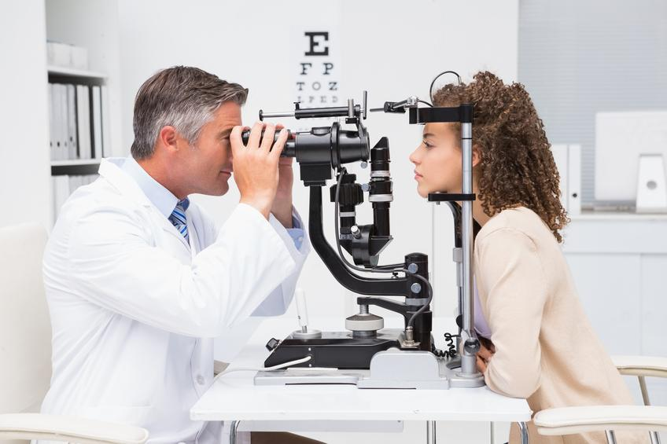

Los optometristas son personal técnico dedicado a la identificación de los trastornos de la visión relacionados con vicios de refracción y su corrección mediante la adaptación de lentes correctivos, también pueden llevar a cabo procedimientos como la determinación de la presión ocular y despistaje de patologías como el daltonismo.
La optometría es la disciplina encargada del diagnóstico, tratamiento y corrección de defectos refractivos y acomodativos. También se ocupa del diseño, cálculo, adaptación y control de lentes de contacto y lentes oftálmicas.
Comúnmente, la optometría se centra en la medida del estado refractivo de ambos ojos mediante procedimientos como la esquiascopía o retinoscopía y, sobre todo, a través de métodos de refracción ocular. De esta forma se detectan, compensan y corrigen numerosas anomalías visuales como la miopía, hipermetropía, astigmatismo, queratocono o estrabismo, entre otras.
Sin embargo, la optometría también comprende la detección de manifestaciones sistémicas, enfermedades y trastornos relacionadas con el sistema visual, como aplicación clínica y la derivación hacia un oftalmólogo. Además, analiza e investiga toda la estructura ocular en sí, mediante técnicas de queratometría, biomicroscopía, paquimetría,nota 1 integridad de las superficies oculares con tinciones (Rosa de Bengala o Fluoresceína), presión intraocular con métodos invasivos y no invasivos, evaluación del nervio óptico y estructuras internas con oftalmoscopio directo o indirecto.